FUNOOS
Explore fluid motion through simulation.
The Funoos laboratory in your browser: 216 simulations from 28 experiments, pre-run at the app's highest gallery quality.
Choose an experiment, pick a case, and inspect the fields, measurements and explanations. Nothing to install.
Choose an experiment, pick a case, and inspect the fields, measurements and explanations. Nothing to install.
0
experiments
0
pre-run cases
0
methods
0
phenomena
Compressible EulerNavier–StokesLattice–BoltzmannPseudo-spectralReaction–DiffusionSPH
experiments
Explore the simulations
28 experiments with 216 pre-run cases, organised by phenomenon. Every page carries the app's own explanation, equations, diagnostics and a side-by-side comparison.
Start here
one experiment from each kind of flow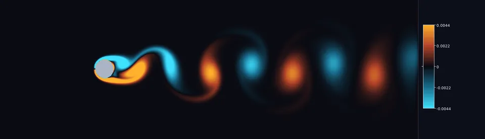
Cylinder wake
How does the wake change with Reynolds number?
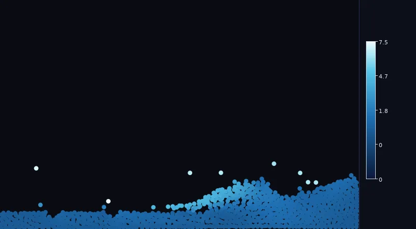
Dam break
How does the released potential energy drive the surge?
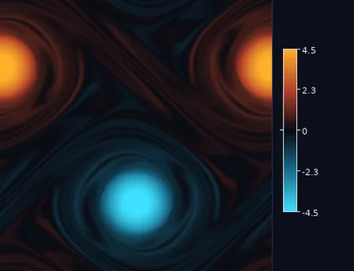
Kelvin–Helmholtz instability
How does a shear layer roll up, and how do the billows pair?
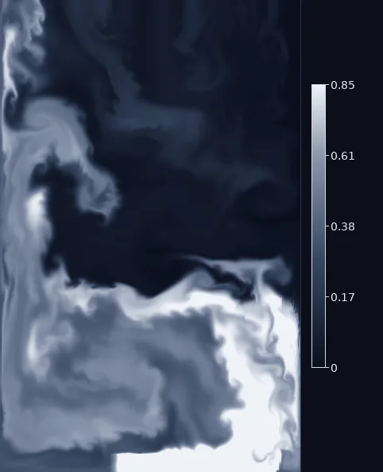
Rising smoke
How does buoyancy turn a smooth column into a turbulent plume?
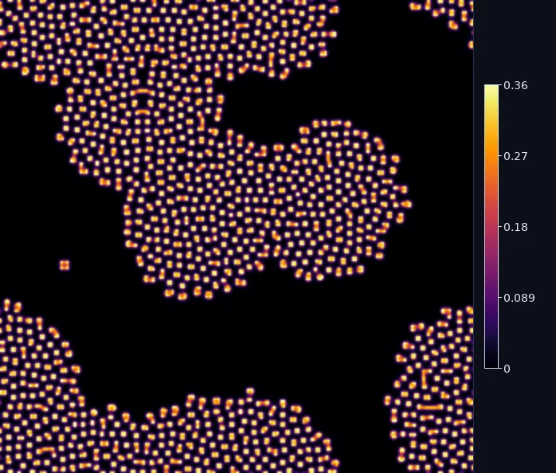
Gray–Scott patterns
Which parameter changes alter the morphology?
Wakes & aerodynamics
5 experimentsCylinder wake
How does the wake change with Reynolds number?
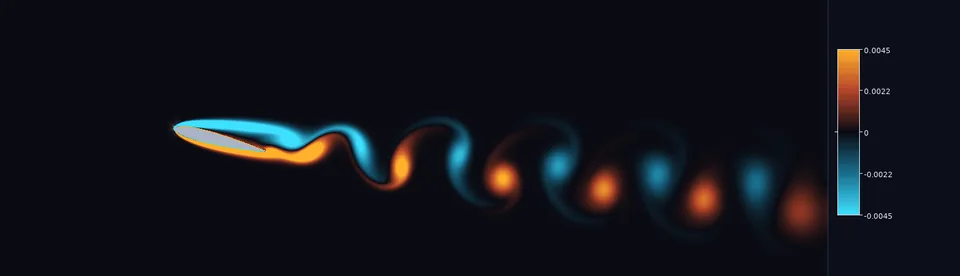
Airfoil lift
How do geometry and angle affect circulation, separation and signed lift?
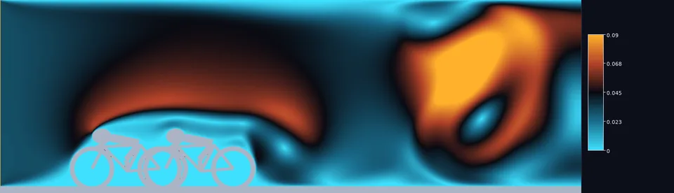
Cycling and drafting
How does a second rider change the wake and the drag estimate?
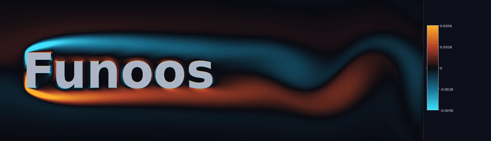
Flow around text
How do gaps and letter shapes redirect the flow?
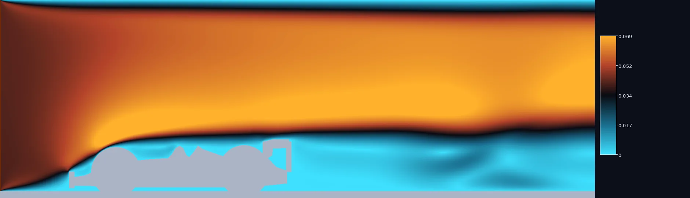
Car silhouette
Where does a bluff vehicle shape shed its wake?
Porous media
2 experiments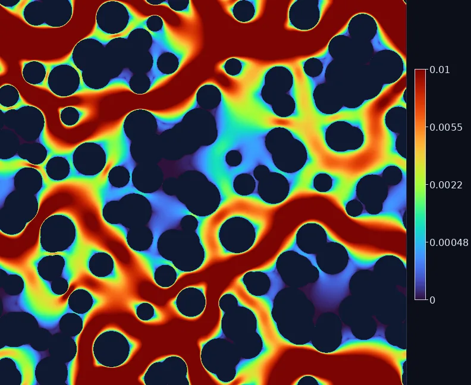
Porous flow
How readily does a grain pack transmit fluid, and why?
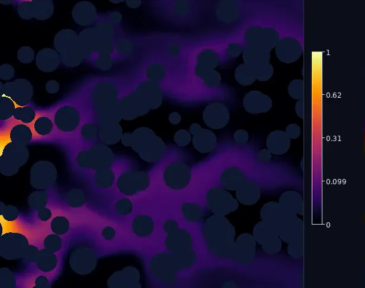
Tracer through rock
How does a tracer spread as the flow carries it through a grain pack?
Buoyancy & convection
5 experimentsRising smoke
How does buoyancy turn a smooth column into a turbulent plume?
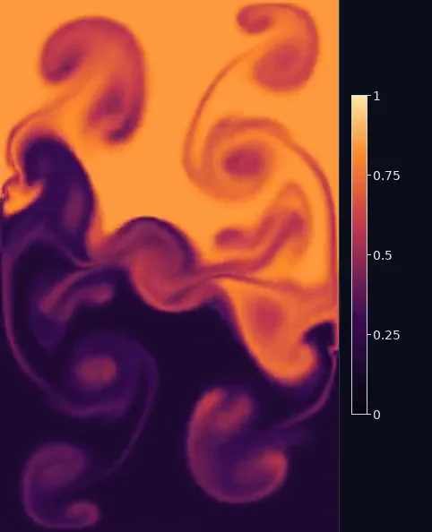
Rayleigh–Taylor instability
How does the density contrast set the growth of the instability?
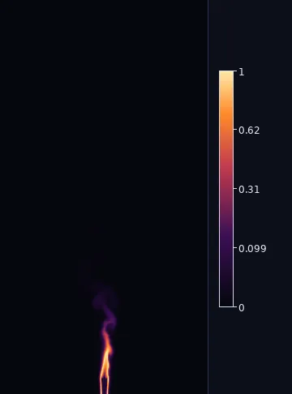
Candle flame
What shapes a laminar diffusion flame and makes its tip flicker?
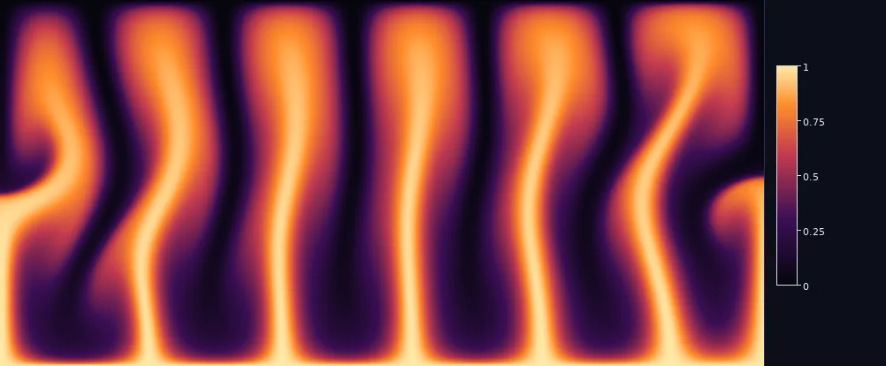
Heated-layer convection
When does convection develop, and how does heat transport change?
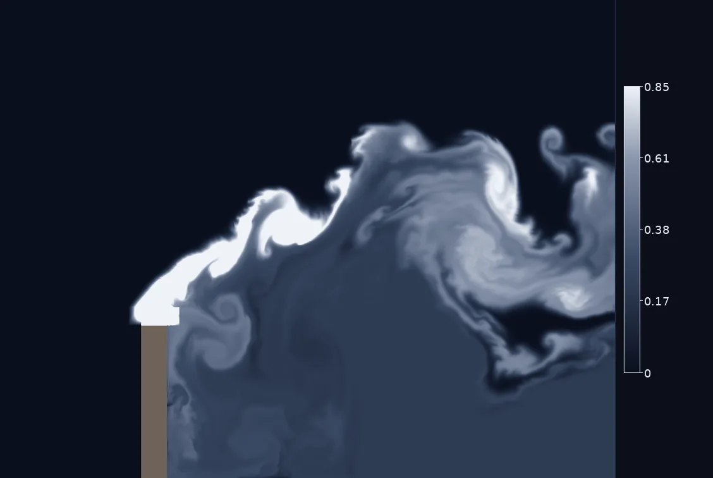
Chimney plume
How does the plume trajectory change with wind speed?
Shocks & compressible flow
4 experimentsSod shock tube
Where are the shock, the contact and the rarefaction, and how large is the error?
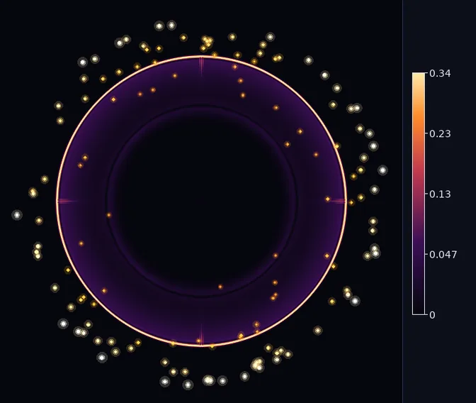
Open-air blast
How fast does a blast front expand, and how does it slow down?
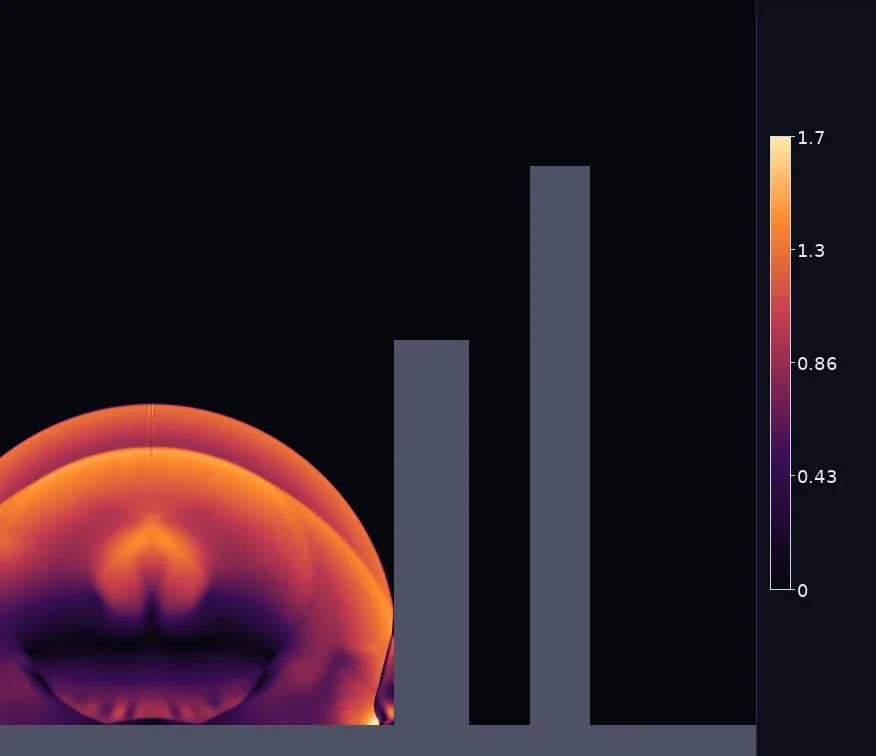
Blast and obstacles
How do boundaries alter shock propagation?
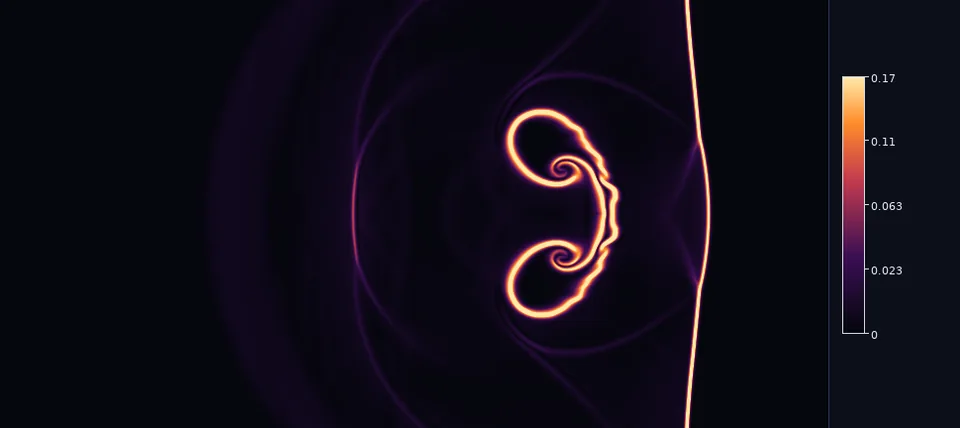
Shock–bubble interaction
How does the density contrast alter the interface deformation?
Free surfaces & waves
7 experiments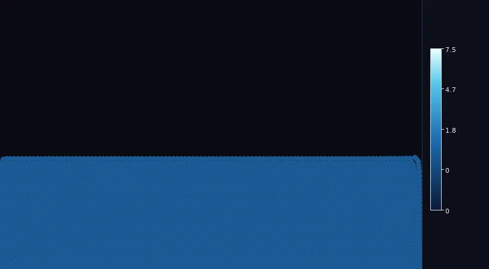
Still-water baseline
Does water at rest stay at rest?
Dam break
How does the released potential energy drive the surge?
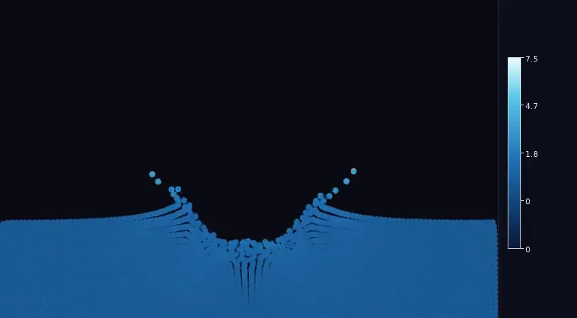
Water-blob impact
How do impact speed and size change the splash?
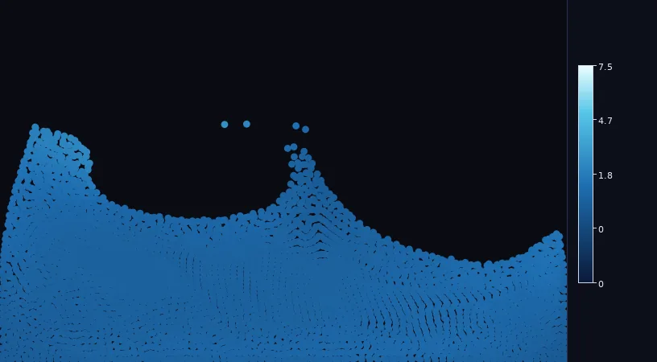
Sloshing tank
How does the response depend on the forcing frequency?
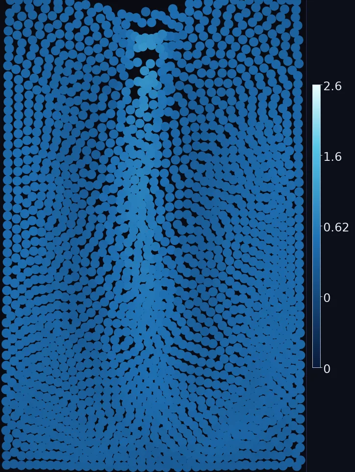
Pouring
How does a continuous stream fill a container?
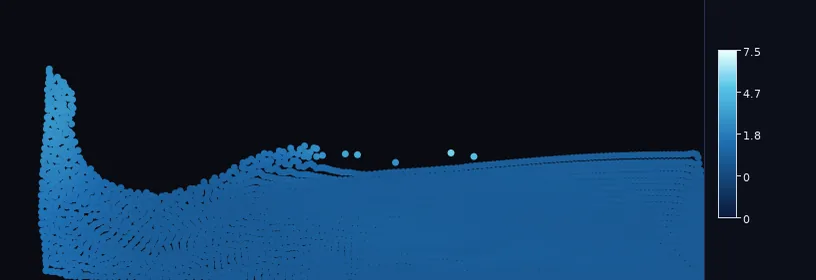
Wave tank
What wavelength, amplitude and reflection does the wavemaker produce?
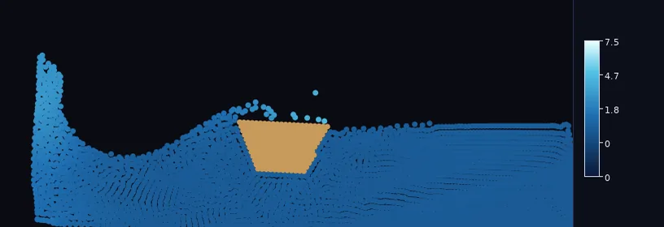
Floating hull
Are flotation and motion consistent with the body parameters?
Vortices & mixing
4 experimentsKelvin–Helmholtz instability
How does a shear layer roll up, and how do the billows pair?
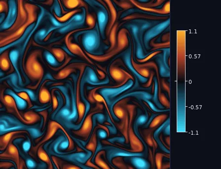
Decaying turbulence
Why do two-dimensional eddies grow as the flow decays?
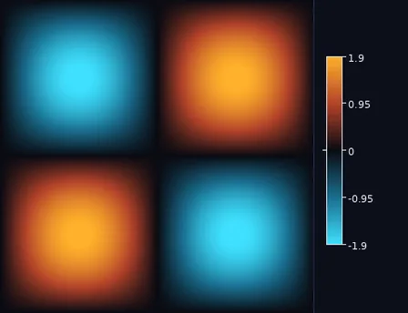
Taylor–Green vortex
Does the solver reproduce the exact viscous decay, and does it improve with refinement?
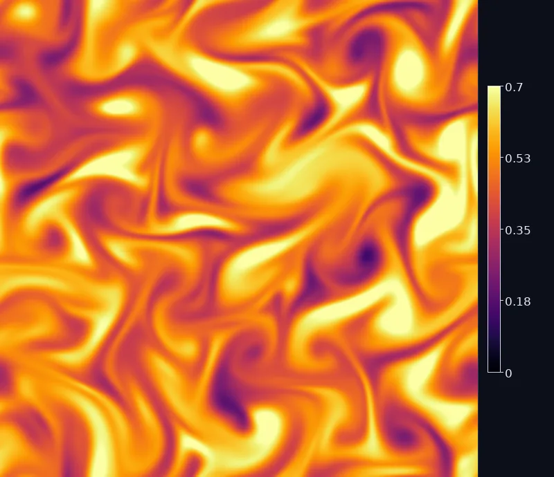
Dye transport
How much apparent mixing comes from stirring and how much from diffusion?
Pattern formation
1 experimentGray–Scott patterns
Which parameter changes alter the morphology?
No experiments match this filter.